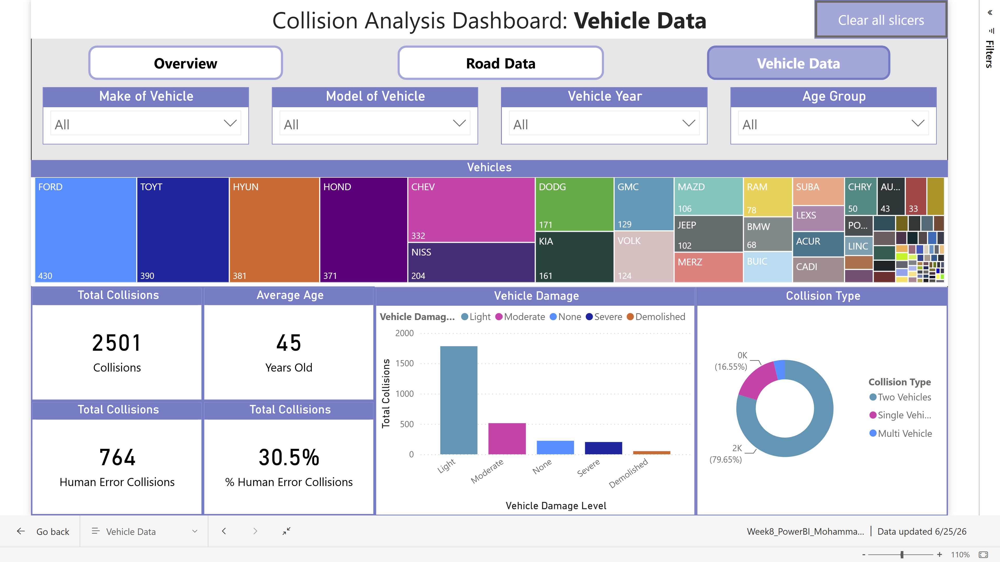
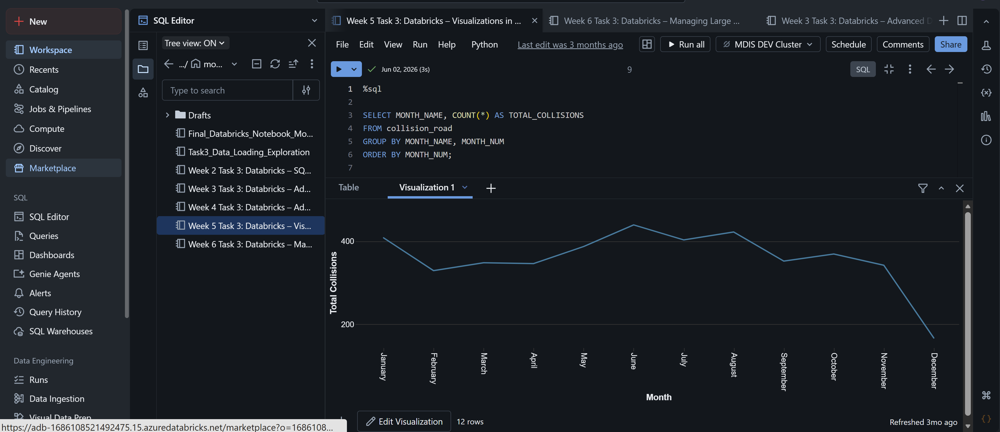

Ministry of Public and Business Service Delivery and Procurement - Work Term Report Summer 2026
Welcome to my website! My name is Mohammad Sameer and I'm a 4th year Software Engineering student at the University of Guelph. This blog will shed light on my 4 month co-op work term as a Junior Technical Analyst at the Ministry of Public and Business Service Delivery and Procurement (MPBSDP).
About the Ministry of Public and Business Service Delivery and Procurement
The Ministry of Public and Business Service Delivery and Procurement (MPBSDP) is one of many ministries under the Ontario Public Service (OPS). They're responsible for providing many of the digital, administrative, and procurement services that support the Ontario government and the public. The ministry works to improve how government services are delivered by modernizing technology systems, managing data securely, and supporting efficient operations across different ministries and agencies. Its work focuses on making government services more accessible, reliable, and efficient for both employees and residents throughout Ontario.
The Labour and Transportation Cluster (LTC) is a cluster within the ministry that provides IT and digital support for the Ministry of Transportation (MTO) and the Ministry of Labour, Immigration, Training and Skills Development (MLITSD). LTC supports a wide range of technology-related services, including data analytics, application support, cybersecurity, and process automation. Within LTC, the Strategic Technologies, Architecture and Data Services Branch (STADS) leverages technology and data to improve government programs and services. STADS focuses on areas such as data analytics, emerging technologies, digital architecture, and innovation to develop effective and modern technology solutions.
Fun Facts
- The Ontario Public Service (OPS) employs over 60,000 people across the province in areas such as technology, transportation, healthcare, finance, and public administration.
- The Ministry of Transportation (MTO) oversees more than 16,000 kilometres of provincial highways and over 2,800 bridges across Ontario.
- Reporting Structure of my team: OPS -> MPBSDP -> LTC -> STADS -> DAI
Job Description - Junior Data Science Developer Co-op


One of the most interesting aspects of the position was the opportunity to work with real-world datasets and see how data products could be used to support important government operations. When I first joined the team, I completed an eight-week training program where I worked with a subset of the vehicle collisions dataset to learn the team's tools and processes. The vehicle collisions dataset contained information about motor vehicle collisions in Ontario, including details about the location, time, and severity of the collisions, as well as information about the vehicles and drivers involved. As part of the training, I used Databricks, SQL, and Python to analyze the data and created a Power BI dashboard to present my findings to the team. I also had weekly check-ins with a Data Science Developer who provided guidance, reviewed my progress, and helped me develop my technical skills. After completing the training, I began working on real user stories submitted by the business, where I helped update existing data products to meet new requirements. This experience allowed me to strengthen my skills in data analysis, SQL, Python, Databricks, and Power BI, while also developing my problem-solving, communication, and teamwork skills. It was rewarding to see the work I completed during my co-op contribute to data products that were actively used to support ministry operations.
Goals
Build Foundational Skills in Azure Databricks
One of my main goals was to build a strong foundation in Azure Databricks since it was one of the main tools used by my team for working with data. I started by completing tutorials and learning modules to become familiar with Databricks notebooks, SQL, and PySpark. During my eight-week training program, I was able to apply what I learned by working with a subset of the Ontario collision dataset (CARS), where I used Databricks to explore, process, and analyze the data. As the term went on, I got hands-on experience working with large datasets and Databricks to clean and analyze the data. By the end of the term, I felt much more comfortable working with Databricks and using SQL and Python to work with data. While there are still more advanced features and techniques I would like to learn, I feel that I developed a strong foundation that I can continue to build on in future data-focused roles.
Develop Advanced Proficiency in Power BII
I also wanted to improve my Power BI skills since it was one of the primary tools used by my team to create and manage data products.. I focused on improving my ability to connect to different data sources, clean and transform data using Power Query, and build effective data models for analysis and visualization. Over time, I worked with real datasets and built dashboards that were used to support decision-making, which made the experience more practical and rewarding. I became more confident not just in using the tool, but also in thinking about how to present data clearly. This is a skill I know I'll keep using in the future as I pursue roles in data science/data analysis.
Develop Strong Communication and Collaboration Skills
Another goal was to improve my communication and collaboration skills, especially since I was working with clients from the MTO. At the beginning, I mostly observed how my team communicated in meetings and emails, and paid attention to how they explained technical concepts to non-technical users. As I became more involved in projects, I started contributing more by asking questions, giving updates, and helping communicate solutions to clients. I also worked on writing clearer emails and documentation related to my tasks. By the end of the term, I felt much more confident speaking in meetings and working with stakeholders, which is a skill that will be valuable in any future job.
Conclusion
Reflecting on my co-op experience with the Ministry of Public and Business Service Delivery and Procurement as a Junior Data Science Developer, I can confidently say that it was a highly rewarding and educational experience. I had the opportunity to work on a variety of projects that allowed me to develop both technical skills and professional competencies. I'm proud of the growth I achieved and the contributions I was able to make. From working with Power BI, Azure Databricks, SQL, Python, and Azure Data Factory, I gained hands-on experience building solutions that supported real business needs. Being part of the DAI team also gave me valuable experience working directly with data pipelines and understanding how different data tools support large-scale government operations.
This experience helped me grow both technically and professionally, strengthening my skills in data analysis, problem-solving, communication, and collaboration. I became more confident working with stakeholders, translating business needs into technical solutions, and adapting to new tools and environments. Overall, this co-op has given me a strong foundation in both technical and client-facing work, and it has played an important role in shaping my future career goals.
Acknowledgments
Working with such an incredible team throughout my co-op term with the the Ministry of Public and Business Service Delivery and Procurement was an incredible experience. I'd like to express my sincere gratitude to my manager, Gbenga Ogundele, for his guidance, support, and for setting me up for success not only for my co-op term but also for my future career. His mentorship played an important role in helping me grow both professionally and personally. I also want to thank the entire DAI Team for their collaboration and willingness to share their expertise, making this experience enjoyable. I'd also like to thank my co-op advisors, Kate McRoberts, Katie Grierson, and Erin Noll for all of their support and advice throughout the whole co-op process.